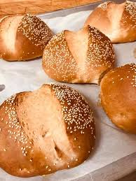
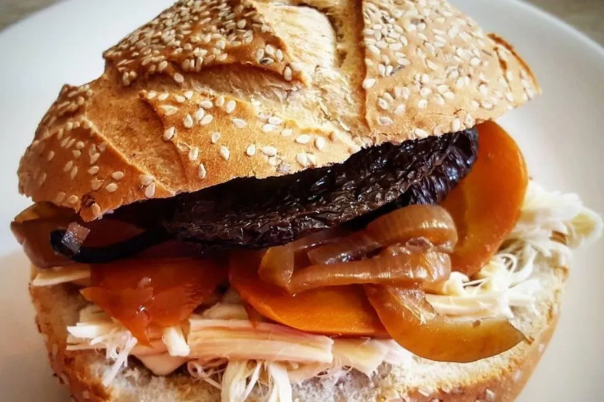
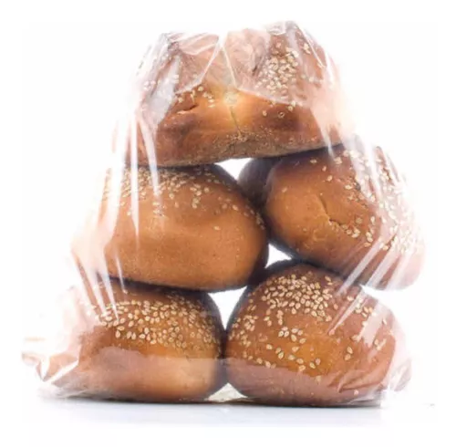

Amarillo
Es uno de los mejores panes que se pueden utilisar, con su crujiente capa exterior y blanda capa interior, se pueden hacer multiples cosas con ellas, ademas es pan casero y de forma natural
$4 por pieza
$50 puede ser de quesillo, jamon, chorizo
puede variar por ingrediente, pregunta con la persona
Oferta
Compra 5 por el precio de $15
Dirección
Nos encontramos en la ciudad de Oaxaca de Juárez.
Aquí le proporcionamos nuestra dirección, correo electrónico y número de telefono para contactarnos.
Dirección:
Calle Amapolas 1200, Colonia Reforma, Oaxaca de Juárez, Oaxaca, México
Correo Electrónico:
ANTEQUERA_Contacto@gmail.com
Teléfono:
+52 951 361 5546